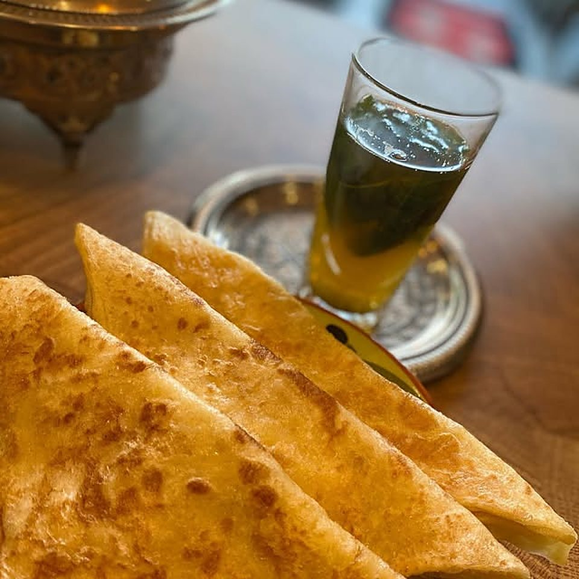
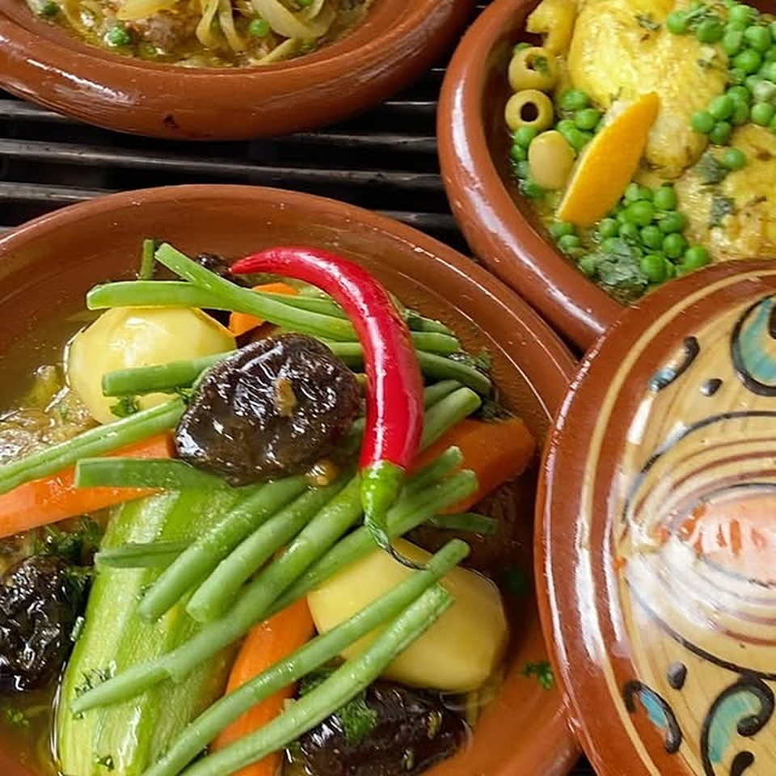
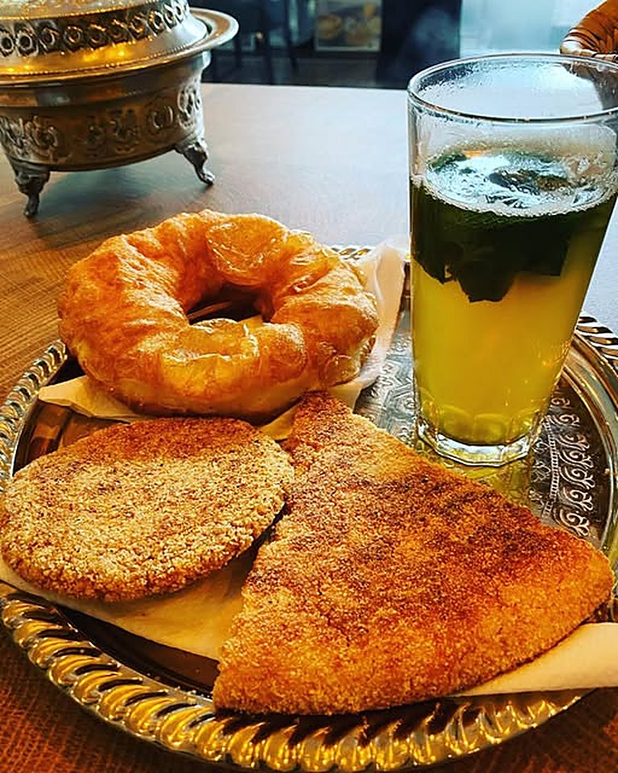
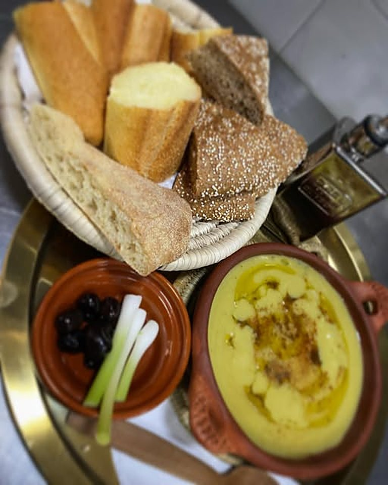
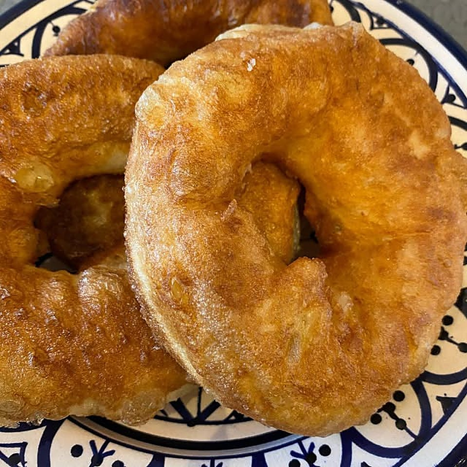

Tajine
Stoofgerecht uit de aardewerken schaal.



Van sfenj bij het ontbijt tot tajine in de avond. Aan de Paul Krugerstraat in Rotterdam, dinsdag tot en met zondag open.
“Finally a place with TASTY moroccan food, highly recommended!”
Zakaria K., op Google
Een greep uit de keuken, van het eerste glas muntthee tot het avondeten.
Stoofgerecht uit de aardewerken schaal.

Vers gemaakt, met brood en olijven erbij.
Verse msemen met muntthee.

Voor de vroege vogels, bij het ontbijt.
“Finally a place with TASTY moroccan food, highly recommended!”Zakaria K., Google
“Kwalitatief en goed eten bij figs & olives en de services is top”Karimoves M., Google
Figs & Olives is een Marokkaans restaurant aan de Paul Krugerstraat in Rotterdam. Je komt hier voor ontbijt, lunch of diner: met vrienden, of gewoon even alleen.
Vroege vogels krijgen sfenj voor ontbijtZo zeggen we het zelf op Instagram
Bel ons of stuur een WhatsApp met de dag, de tijd en het aantal personen.
Paul Krugerstraat 214
3072 GS Rotterdam